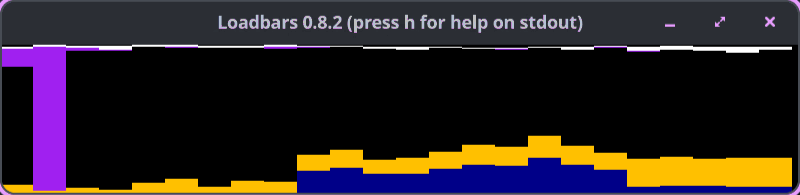

Loadbars resurrected: From Perl to Go after 15 years
Published at 2026-02-14T22:43:27+02:00
Who remembers Loadbars? The small, humble server load monitoring tool I wrote back in November 2010 as a Perl+SDL project during my first job after graduating from university as a Linux Sysadmin. That was over 15 years ago. After being effectively dead for more than a decade, Loadbars is working again -- rewritten in Go from Perl with the help of AI (Claude Code), and it even works on macOS now (as a client).

Loadbars on Codeberg
Table of Contents
What Loadbars is (and isn't)
Loadbars is a real-time server load monitoring tool. It connects to one or more Linux hosts via SSH and shows CPU, memory, and network usage as vertical colored bars in an SDL window. You can also run it locally without SSH. It shows the current state only -- like top or vmstat, but visual and across multiple hosts at once. All you need is a working SSH connection through an SSH Agent.
It is not a tool for collecting loads and drawing graphs for later analysis. There is no history, no recording, no database. Tools like Prometheus or Grafana require significant setup time before producing results. Loadbars lets you observe the current state immediately. You install one binary, point it at your servers, and see what's happening right now.
┌─ Loadbars 0.9.0 ──────────────────────────────────────────┐
│ │
│ ████ ████ ████ ██ ████ ████ ████ ██ ░░██ ░░██ │
│ ████ ████ ████ ██ ████ ████ ████ ██ ░░██ ░░██ │
│ ████ ████ ████ ██ ████ ████ ████ ██ ░░██ ░░██ │
│ ████ ████ ████ ██ ████ ████ ████ ██ ░░██ ░░██ │
│ ████ ████ ████ ██ ████ ████ ████ ██ ░░██ ░░██ │
│ ▓▓▓▓ ▓▓▓▓ ▓▓▓▓ ▓▓ ▓▓▓▓ ▓▓▓▓ ▓▓▓▓ ▓▓ ░░▓▓ ░░▓▓ │
│ CPU cpu0 cpu1 mem CPU cpu0 cpu1 mem net net │
│ └──── host1 ────┘ └──── host2 ────┘ │
└───────────────────────────────────────────────────────────┘
Why the rewrite was necessary
I'd have liked to have kept the Perl version. Perl was the first language I learned properly, and I have a soft spot for it. But there was an (for me) unresolvable multithreading issue related to recent Perl and SDL library versions. Perl's ithreads and SDL doesn't work reliably anymore, and debugging decade-old thread-safety issues in XS bindings is not a productive use of time.
I actually tried to fix the Perl version first. I had Claude Code (CLI, running Opus 5.3) attempt to resolve the segfault involving Perl's multi-threading and SDL. It couldn't—the issue is deep in the XS bindings and not something you can fix from Perl-land (nor did I want to invest my own time in it either). So the more pragmatic thing to do was to let Claude Code rewrite the whole thing in Go instead. That worked without any major issues. The Go version is cleaner, faster to build, easier to deploy (single static binary), and now has proper unit tests.
I could have redesigned the Perl version to make it work, but I think Go is the better choice in this case. The important thing: for the user, nothing changes. The rewrite's usage, look, and feel are de-facto identical to the old Perl version. The same hotkeys, the same bar layout, the same colors, the same config file format. If you used Loadbars ten years ago, you can pick up the new version and everything works exactly as you remember. The only difference is under the hood.
A brief history
The first commit is from November 5, 2010—over 15 years ago. Back then, it was called cpuload and was a quick Perl+SDL hack I wrote at work to keep an eye on a fleet of Linux servers. It grew into Loadbars over the following weeks, gaining memory and network monitoring, ClusterSSH integration, and a config file. The last meaningful Perl development was around 2013. Around that time, there were already a couple of colleagues who used Loadbars frequently. But then I changed my job role and later even jobs, and I stopped development of Loadbars.
For the next decade, it sat dormant. I occasionally thought about reviving it, but Perl+SDL threading issues made it impractical. In February 2026, I finally sat down with Claude Code and let it rewrite the whole thing in Go in a single session.
Features
CPU monitoring
CPU usage is shown as vertical colored bars. Each bar is stacked from bottom to top with the following segments:
- System (blue) -- kernel CPU time
- User (yellow) -- user-space CPU time; turns dark yellow above 50%, orange above 70%
- Nice (green) -- low-priority user processes
- Idle (black) -- unused CPU
- IOwait (purple) -- waiting for disk I/O
- IRQ / SoftIRQ (white) -- interrupt handling
- Guest (red) -- time spent running virtual CPUs
- Steal (red) -- time stolen by the hypervisor
Press 1 to toggle between one aggregate bar per host and one bar per core. Press e for extended mode, which adds a 1px peak line showing the maximum system+user percentage over the last N samples.
Memory monitoring
Press 2 to toggle memory bars. Each host gets one bar split in two halves:
- Left half: RAM usage (dark grey = used, black = free)
- Right half: Swap usage (grey = used, black = free)
Network monitoring
Press 3 to toggle network bars. Loadbars sums RX and TX bytes across all non-loopback interfaces (e.g. eth0, wlan0, enp0s3) and shows the combined total. Loopback (lo) is always excluded. Each net bar has two halves:
- Left half: RX (received) growing from the top (light green)
- Right half: TX (transmitted) growing from the bottom (light green)
Network utilization is shown as a percentage of the configured link speed. The default link speed is gbit (1 Gbps). Change it with --netlink or in the config file. Press f/v to scale the link speed up or down during runtime (cycles through mbit, 10mbit, 100mbit, gbit, 10gbit).
If the net bar is red, it means no non-loopback interface was found on that host.
All hotkeys
Key Action
───── ──────────────────────────────────────────────────
1 Toggle CPU cores (aggregate vs per-core bars)
2 Toggle memory bars
3 Toggle network bars (aggregated across interfaces)
e Toggle extended display (peak line on CPU bars)
h Print hotkey list to stdout
q Quit
w Write current settings to ~/.loadbarsrc
a / y Increase / decrease CPU average samples
d / c Increase / decrease net average samples
f / v Link scale up / down (net utilization reference)
Arrows Resize window (left/right: width, up/down: height)
SSH and multi-host support
Loadbars connects to remote hosts via SSH using public key authentication. No agent or special setup is needed on the remote side -- Loadbars embeds a small bash script in the binary and runs it via bash -s over SSH. The remote hosts only need bash and /proc (i.e. Linux).
loadbars --hosts server1,server2,server3
loadbars --hosts root@server1,root@server2
loadbars servername{01..50}.example.com --showcores 1
Shell brace expansion works for specifying ranges of hosts. You can also use ClusterSSH cluster definitions from /etc/clusters:
loadbars --cluster production
When no hosts are given, Loadbars runs locally on localhost without SSH.
Config file
Loadbars reads ~/.loadbarsrc on startup. Any option from --help can be set there without the leading --. Comments use #. Press w during runtime to write the current settings to the config file.
showcores=1
showmem=1
shownet=1
extended=1
netlink=gbit
cpuaverage=10
netaverage=15
height=150
barwidth=1200
macOS support
macOS is supported as a client for monitoring remote Linux servers via SSH. Local monitoring on macOS is not supported because it requires the /proc filesystem. The SDL window is automatically brought to the foreground on macOS.
Building from source
Loadbars requires Go 1.25+ and SDL2. Install the SDL2 development libraries for your platform:
# Fedora / RHEL / CentOS
sudo dnf install SDL2-devel
# macOS
brew install sdl2
Then build with Mage (recommended) or plain Go:
mage build
./loadbars --hosts localhost
# or without Mage:
go build -o loadbars ./cmd/loadbars
Install to ~/go/bin:
mage install
Run tests:
mage test
# or: go test ./...
- Fedora Linux 43 and most modern Linux distributions (RHEL, CentOS, Ubuntu, Debian, etc.)
- macOS (Darwin) as a client connecting to remote Linux servers via SSH
Remote hosts must be Linux with /proc and bash.
Future-proof with Go
One of the reasons I chose Go for the rewrite is Go's compatibility promise. The Go 1 compatibility guarantee means that code written today will continue to compile and work with future Go releases. No more bitrotted XS bindings, no more ithreads headaches, no more hunting for compatible versions of SDL Perl modules.
The Go SDL2 bindings (go-sdl2) are actively maintained, and SDL2 itself is a stable, well-supported library. The entire application compiles to a single static binary with no runtime dependencies beyond SDL2. Deploy it anywhere, run it for years.
The AI rewrite experience
This resurrection would not have been really possible without the help of AI. The rewrite was done with Claude Code CLI (Anthropic's coding agent) running Claude Opus 5.3. I pointed it at the Perl source, and let it produce the Go equivalent. The process was surprisingly smooth -- the rewrite worked without any major issues. There were some minor bugs (such as network bars not showing up initially, and/or some pixel errors in the bars), but they were sorted by Claude by providing screenshots of the problems.
E-Mail your comments to paul@nospam.buetow.org :-)
Other related posts:
2026-02-15 Loadbars resurrected: From Perl to Go after 15 years (You are currently reading this)
2025-11-02 Perl New Features and Foostats
2025-09-14 Bash Golf Part 4
2025-03-05 Sharing on Social Media with Gos v1.0.0
2024-03-03 A fine Fyne Android app for quickly logging ideas programmed in Go
2023-12-10 Bash Golf Part 3
2023-06-01 KISS server monitoring with Gogios
2022-05-27 Perl is still a great choice
2022-01-01 Bash Golf Part 2
2021-11-29 Bash Golf Part 1
2011-05-07 Perl Daemon (Service Framework)
2008-06-26 Perl Poetry
Back to the main site